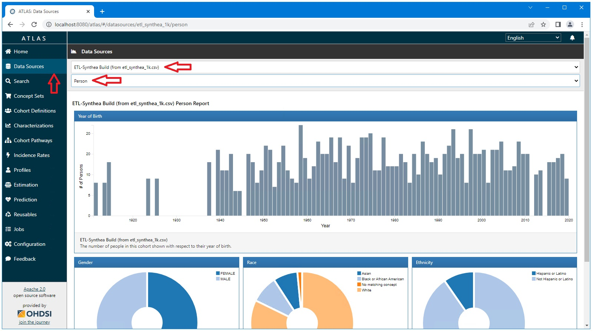

Ponos Quick Start Guide: Run Tomcat and Launch Atlas
Launch Tomcat
Open a cmd prompt and navigate to the bin dir of Tomcat:
C:\_YES\servers\apache-tomcat\apache-tomcat-8.5.85-windows-x64\apache-tomcat-8.5.85\bin
You can use the "tom" command that is included in the bat files provided by the _YES install as shown below.
tom
catalina.bat start
This should open a new cmd window with a Java logo that will show the logging output of Tomcat.
Wait a few minutes for Tomcat to start (i.e. for the logging output to stop).
Launch Atlas
Open a web browser and navigate to http://localhost:8080/manager
The user name and password are:
tomcat
admin
Select the "atlas" link to launch Atlas. This will launch Atlas.
When Atlas is launched for the first time you will be asked to accept the SNOMED-CT license. Do so.
Select the "Data Sources" tab and then select "ETL-Synthea Build (from etl_synthea_1k.csv)" as your data source.
Select a report to confirm the data have been uploaded and Atlas is up and running correctly.
The Person report is shown below.
